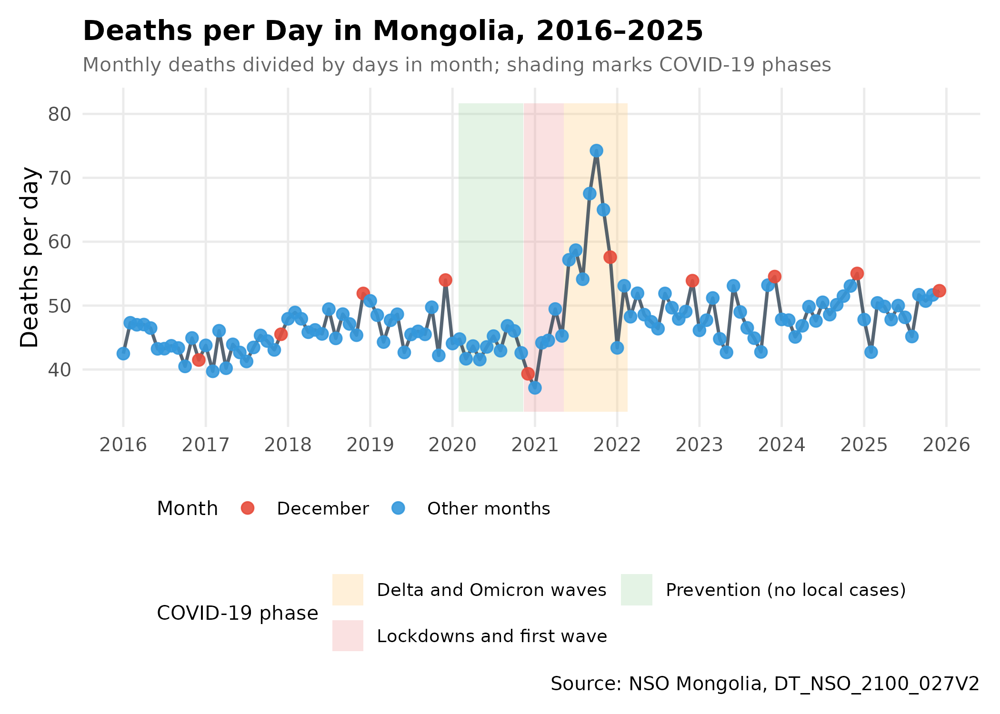
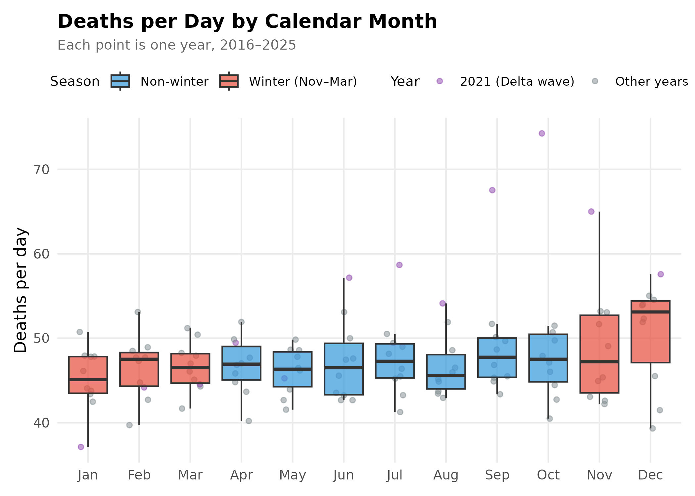
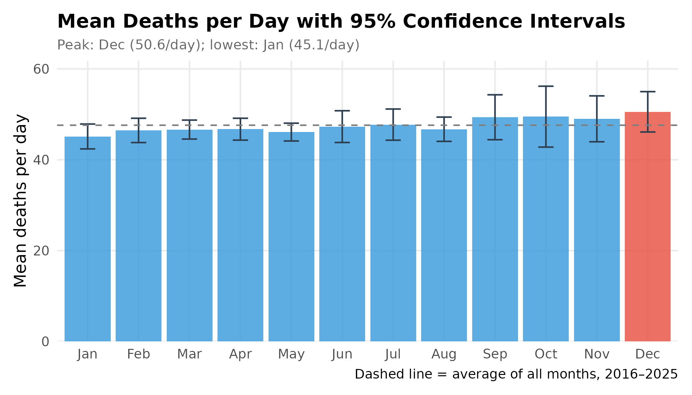
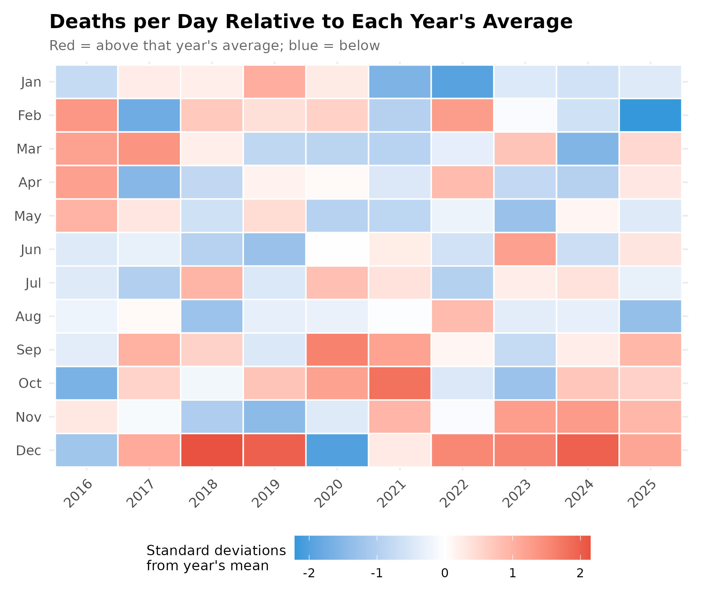
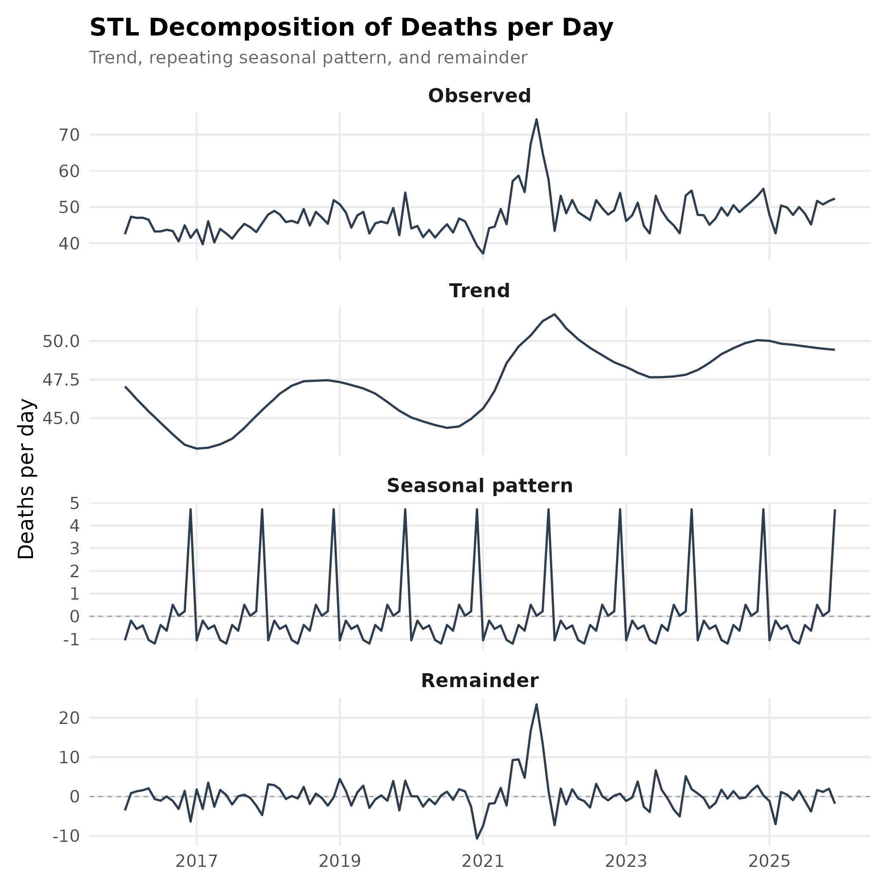
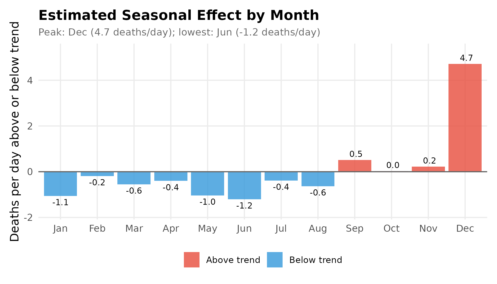
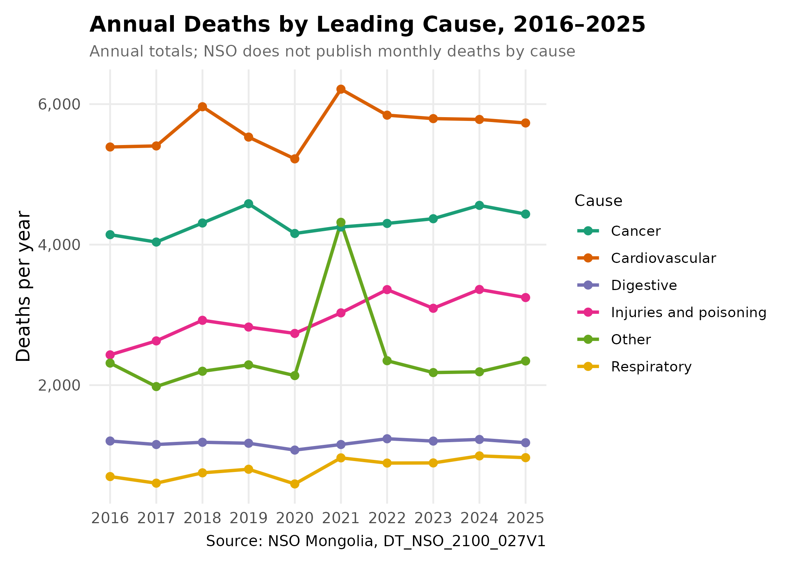
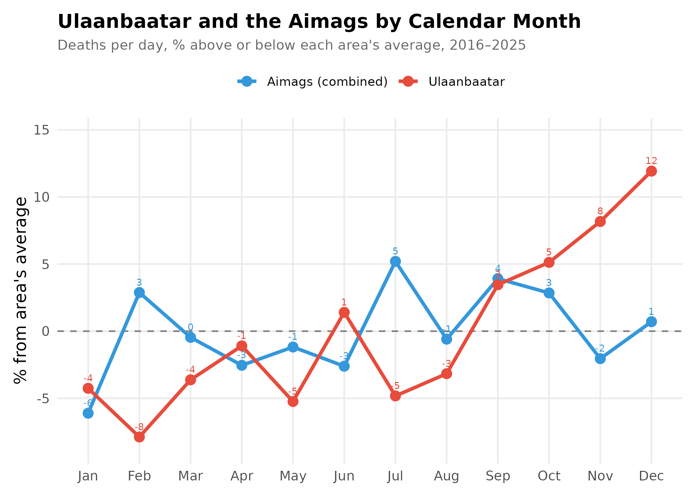
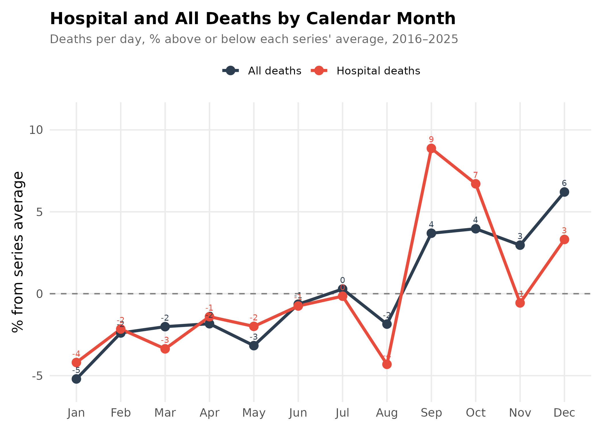

Is December Mongolia's Deadliest Month? A Look at Monthly Mortality Data
Source:vignettes/mortality-analysis.Rmd
mortality-analysis.RmdRead with caution. The main finding, a December peak, is unconfirmed. If the National Statistics Office (NSO) counts deaths by the month they are registered rather than the month they occur, year-end administrative catch-up could inflate December. It is not yet confirmed which date the monthly series uses. Treat the December result as a pattern in the published statistics, not as evidence that more people die in December.
library(mongolstats)
library(dplyr)
library(tidyr)
library(ggplot2)
library(lubridate)
library(scales)
nso_options(mongolstats.lang = "en")
# Reusable theme for all plots in this analysis
theme_mortality <- function(base_size = 12) {
theme_minimal(base_size = base_size) +
theme(
plot.margin = margin(10, 10, 10, 10),
plot.title = element_text(face = "bold", size = base_size + 2),
plot.subtitle = element_text(size = base_size - 2, color = "grey40"),
legend.text = element_text(size = base_size - 3),
legend.title = element_text(size = base_size - 2),
panel.grid.minor = element_blank()
)
}
theme_set(theme_mortality())
# Formatting helpers for inline results
fmt_pct <- function(x, digits = 1) sprintf(paste0("%+.", digits, "f%%"), x)
fmt_num <- function(x, digits = 1) format(round(x, digits), nsmall = digits)
full_month <- function(m) month.name[m]Overview
A social media post claimed that “the highest deaths are occurring in December” in Mongolia, and suggested New Year celebrations might be the reason. This article checks the claim against NSO’s monthly death statistics, with the COVID-19 pandemic (2020–2022) in mind.
Questions
- Does December have the most deaths? Once months of different lengths are put on an equal footing, is December the peak?
- Is winter in general deadlier? Mongolia’s winters are severe, so a broad cold-season rise would be expected.
- Can these data explain why? What can monthly totals, annual causes of death, regional and hospital data tell us, and what can they not?
Data Sources
We use three NSO tables:
| Table | Description | Granularity |
|---|---|---|
| DT_NSO_2100_027V2 | Deaths by aimag and the capital, by month | Monthly |
| DT_NSO_2100_027V3 | Deaths in hospitals by aimag and the capital, by month | Monthly |
| DT_NSO_2100_027V1 | Deaths by leading cause, by region and year | Annual |
All figures are counts, not rates. Mongolia’s population grew over the period, so slow upward trends partly reflect population growth and ageing. This does not affect comparisons between months within a year.
1. Monthly Death Patterns
Fetching and Preparing Data
death_tbl <- "DT_NSO_2100_027V2"
months_meta <- nso_dim_values(death_tbl, "Month", labels = "en")
# Add calendar fields and deaths per day to an NSO monthly table
parse_months <- function(data) {
data |>
mutate(
date = as.Date(paste0(Month_en, "-01")),
year = year(date),
month = month(date),
month_name = factor(month.abb[month], levels = month.abb),
days = unname(days_in_month(date)),
daily_avg = value / days
)
}
# National deaths (Region code "0" = total) for every published month
deaths_all <- nso_data(
tbl_id = death_tbl,
selections = list(Region = "0", Month = months_meta$code),
labels = "en"
) |>
parse_months() |>
filter(!is.na(value)) |>
arrange(date)
# Keep complete calendar years only
complete_years <- deaths_all |> count(year) |> filter(n == 12) |> pull(year)
stopifnot(all(diff(complete_years) == 1))
first_year <- min(complete_years)
last_year <- max(complete_years)
n_years <- length(complete_years)
period <- paste0(first_year, "–", last_year)
covid_years <- 2020:2022
deaths_monthly <- deaths_all |>
filter(year %in% complete_years) |>
mutate(
Month_Type = if_else(month == 12, "December", "Other months"),
Season = if_else(month %in% c(11, 12, 1, 2, 3), "Winter (Nov–Mar)", "Non-winter")
)The monthly series begins in January 2016. This analysis uses the 10 complete years from 2016 to 2025.
Methodological note: All monthly comparisons use deaths per day (deaths in the month ÷ days in the month). This stops February (28 or 29 days) and 30-day months from looking lower than 31-day months simply because they are shorter. December and January both have 31 days, so this adjustment does not change how those two compare.
Time Series with COVID-19 Context
covid_periods <- tibble::tribble(
~Start, ~End, ~Phase,
"2020-01-27", "2020-11-11", "Prevention (no local cases)",
"2020-11-12", "2021-05-08", "Lockdowns and first wave",
"2021-05-09", "2022-02-16", "Delta and Omicron waves"
) |>
mutate(across(c(Start, End), as.Date))
y_range <- range(deaths_monthly$daily_avg)
y_min <- y_range[1] * 0.9
y_max <- y_range[2] * 1.1
deaths_monthly |>
ggplot(aes(x = date, y = daily_avg)) +
geom_rect(
data = covid_periods,
aes(xmin = Start, xmax = End, ymin = y_min, ymax = y_max, fill = Phase),
inherit.aes = FALSE, alpha = 0.3
) +
geom_line(color = "#2c3e50", linewidth = 0.8, alpha = 0.8) +
geom_point(aes(color = Month_Type), size = 2.5, alpha = 0.9) +
scale_color_manual(
values = c("December" = "#e74c3c", "Other months" = "#3498db"),
name = "Month"
) +
scale_fill_manual(
values = c(
"Prevention (no local cases)" = "#a5d6a7",
"Lockdowns and first wave" = "#ef9a9a",
"Delta and Omicron waves" = "#ffcc80"
),
name = "COVID-19 phase"
) +
scale_x_date(date_breaks = "1 year", date_labels = "%Y") +
scale_y_continuous(labels = comma, limits = c(y_min, y_max)) +
labs(
title = paste0("Deaths per Day in Mongolia, ", period),
subtitle = "Monthly deaths divided by days in month; shading marks COVID-19 phases",
x = NULL,
y = "Deaths per day",
caption = "Source: NSO Mongolia, DT_NSO_2100_027V2"
) +
theme(legend.position = "bottom", legend.box = "vertical", legend.box.just = "left") +
guides(
color = guide_legend(order = 1, nrow = 1),
fill = guide_legend(order = 2, nrow = 2)
)
What the series shows:
- Level: Most months fall between about 40 and 55 deaths per day, drifting upward over time as the population grows and ages.
- COVID-19: The highest month in the series is October 2021 (74.3 deaths/day), during the Delta wave. The lowest is January 2021 (37.1), during the first lockdowns. Without an expected baseline, these data cannot say whether lockdowns prevented deaths or whether registration was disrupted.
- December: The red points are often among the highest of their year, but not every year.
Monthly Distribution
monthly_stats <- deaths_monthly |>
summarise(
mean_daily = mean(daily_avg),
sd_daily = sd(daily_avg),
n = n(),
.by = c(month, month_name)
) |>
mutate(
se = sd_daily / sqrt(n),
ci_lower = mean_daily - qt(0.975, n - 1) * se,
ci_upper = mean_daily + qt(0.975, n - 1) * se
) |>
arrange(month)
deaths_monthly |>
mutate(year_type = if_else(year == 2021, "2021 (Delta wave)", "Other years")) |>
ggplot(aes(x = month_name, y = daily_avg)) +
geom_point(
aes(color = year_type),
position = position_jitter(width = 0.2, height = 0, seed = 2025),
alpha = 0.5, size = 1.5
) +
geom_boxplot(aes(fill = Season), alpha = 0.7, outlier.shape = NA) +
scale_fill_manual(
values = c("Winter (Nov–Mar)" = "#e74c3c", "Non-winter" = "#3498db"),
name = "Season"
) +
scale_color_manual(
values = c("2021 (Delta wave)" = "#8e44ad", "Other years" = "#7f8c8d"),
name = "Year"
) +
scale_y_continuous(labels = comma) +
labs(
title = "Deaths per Day by Calendar Month",
subtitle = paste0("Each point is one year, ", period),
x = NULL,
y = "Deaths per day"
) +
theme(legend.position = "top") +
guides(fill = guide_legend(order = 1), color = guide_legend(order = 2))
Reading the boxes: December’s box sits above the others. The rest of winter does not: January, March and November look much like the summer months. Averaged over all five winter months, deaths per day are -0.2% relative to the other seven months. Without December, the remaining winter months are -1.7%. The purple 2021 points show the Delta wave pushing up mid-year and autumn months.
Monthly Averages with Confidence Intervals
Note: These intervals use a t distribution for 10 years and treat years as independent. Year-to-year correlation is ignored, and the COVID-19 years are included, so they are a rough guide only.
peak_month <- slice_max(monthly_stats, mean_daily, n = 1)
trough_month <- slice_min(monthly_stats, mean_daily, n = 1)
monthly_stats |>
mutate(bar_type = if_else(month == peak_month$month, "Peak month", "Other months")) |>
ggplot(aes(x = month_name, y = mean_daily)) +
geom_col(aes(fill = bar_type), alpha = 0.8) +
geom_errorbar(aes(ymin = ci_lower, ymax = ci_upper), width = 0.3, color = "#2c3e50") +
geom_hline(yintercept = mean(monthly_stats$mean_daily), linetype = "dashed", color = "grey50") +
scale_fill_manual(values = c("Other months" = "#3498db", "Peak month" = "#e74c3c"), guide = "none") +
scale_y_continuous(labels = comma, expand = expansion(mult = c(0, 0.1))) +
labs(
title = "Mean Deaths per Day with 95% Confidence Intervals",
subtitle = paste0("Peak: ", peak_month$month_name, " (", fmt_num(peak_month$mean_daily),
"/day); lowest: ", trough_month$month_name, " (", fmt_num(trough_month$mean_daily), "/day)"),
x = NULL,
y = "Mean deaths per day",
caption = paste0("Dashed line = average of all months, ", period)
)
December averages 50.6 deaths per day, +6.8% relative to the average of the other eleven months. Leaving out the pandemic years 2020–2022, December is still the peak month, at +8.7% relative to the other months, so the December result does not depend on the pandemic.
2. Heat Map: Year × Month
heatmap_data <- deaths_monthly |>
mutate(
z_score = (daily_avg - mean(daily_avg)) / sd(daily_avg),
.by = year
) |>
mutate(month_name = factor(month_name, levels = rev(month.abb)))
heatmap_data |>
ggplot(aes(x = factor(year), y = month_name, fill = z_score)) +
geom_tile(color = "white", linewidth = 0.5) +
scale_fill_gradient2(
low = "#3498db", mid = "white", high = "#e74c3c",
midpoint = 0, name = "Standard deviations\nfrom year's mean"
) +
labs(
title = "Deaths per Day Relative to Each Year's Average",
subtitle = "Red = above that year's average; blue = below",
x = NULL,
y = NULL
) +
theme(
axis.text.x = element_text(angle = 45, hjust = 1),
legend.position = "bottom",
legend.key.width = unit(1.5, "cm")
)
Each column is standardised within its year, so this shows each month’s position within its year rather than absolute levels. December is above its year’s average in 8 of 10 years. January is above average in only 4, and February in 5. In 2021 the Delta wave dominates the late summer and autumn months.
3. Statistical Checks
Seasonal Decomposition (STL)
STL (Seasonal and Trend decomposition using Loess) splits the series into a smooth trend, a repeating seasonal pattern, and a remainder.
ts_deaths <- ts(deaths_monthly$daily_avg, start = c(first_year, 1), frequency = 12)
# s.window = "periodic" estimates one seasonal pattern shared by all years;
# robust = TRUE downweights unusual months such as the 2021 surge.
decomp <- stl(ts_deaths, s.window = "periodic", robust = TRUE)
component_levels <- c("Observed", "Trend", "Seasonal pattern", "Remainder")
decomp_df <- tibble(
date = deaths_monthly$date,
Observed = as.numeric(ts_deaths),
Trend = as.numeric(decomp$time.series[, "trend"]),
`Seasonal pattern` = as.numeric(decomp$time.series[, "seasonal"]),
Remainder = as.numeric(decomp$time.series[, "remainder"])
) |>
pivot_longer(-date, names_to = "component", values_to = "value") |>
mutate(component = factor(component, levels = component_levels))
zero_lines <- tibble(
component = factor(c("Seasonal pattern", "Remainder"), levels = component_levels),
yintercept = 0
)
decomp_df |>
ggplot(aes(x = date, y = value)) +
geom_hline(data = zero_lines, aes(yintercept = yintercept),
linetype = "dashed", color = "grey60", linewidth = 0.3) +
geom_line(color = "#2c3e50", linewidth = 0.6) +
facet_wrap(~component, ncol = 1, scales = "free_y") +
scale_x_date(date_breaks = "2 years", date_labels = "%Y") +
labs(
title = "STL Decomposition of Deaths per Day",
subtitle = "Trend, repeating seasonal pattern, and remainder",
x = NULL,
y = "Deaths per day"
) +
theme(strip.text = element_text(face = "bold", size = 11), panel.spacing = unit(0.5, "lines"))
The Seasonal Pattern
seasonal_cycle <- tibble(
month = 1:12,
month_name = factor(month.abb, levels = month.abb),
seasonal_effect = as.numeric(decomp$time.series[1:12, "seasonal"])
)
peak_seasonal <- slice_max(seasonal_cycle, seasonal_effect, n = 1)
trough_seasonal <- slice_min(seasonal_cycle, seasonal_effect, n = 1)
other_max <- max(abs(seasonal_cycle$seasonal_effect[seasonal_cycle$month != peak_seasonal$month]))
seasonal_cycle |>
ggplot(aes(x = month_name, y = seasonal_effect)) +
geom_col(aes(fill = if_else(seasonal_effect > 0, "Above trend", "Below trend")), alpha = 0.8) +
geom_hline(yintercept = 0, color = "grey40") +
geom_text(
aes(label = fmt_num(seasonal_effect), vjust = if_else(seasonal_effect > 0, -0.5, 1.5)),
size = 3
) +
scale_fill_manual(values = c("Above trend" = "#e74c3c", "Below trend" = "#3498db"), name = NULL) +
scale_y_continuous(expand = expansion(mult = 0.15)) +
labs(
title = "Estimated Seasonal Effect by Month",
subtitle = paste0("Peak: ", peak_seasonal$month_name, " (", fmt_num(peak_seasonal$seasonal_effect),
" deaths/day); lowest: ", trough_seasonal$month_name, " (",
fmt_num(trough_seasonal$seasonal_effect), " deaths/day)"),
x = NULL,
y = "Deaths per day above or below trend"
) +
theme(legend.position = "bottom")
Key finding: The seasonal pattern is a single spike in December, about 4.7 deaths per day above trend. Every other month is within ±1.2 deaths per day, and the lowest month, June, is only -1.2 deaths per day. There is no broad winter rise.
Month Effects After Removing Year-to-Year Changes
A regression with a term for each year and each calendar month estimates how far each month sits from the average month, after removing differences between years such as population growth. We leave out the pandemic years 2020–2022.
fit_data <- deaths_monthly |>
filter(!year %in% covid_years) |>
mutate(
year_f = factor(year),
# December first so that, with sum-to-zero contrasts, coefficient 1 is
# December's deviation from the average month and coefficient 2 January's
month_f = factor(month, levels = c(12, 1:11))
)
month_fit <- lm(
daily_avg ~ year_f + month_f,
data = fit_data,
contrasts = list(year_f = "contr.sum", month_f = "contr.sum")
)
month_ci <- confint(month_fit)
month_effects <- tibble(
Month = c("December", "January"),
term = c("month_f1", "month_f2")
) |>
mutate(
estimate = coef(month_fit)[term],
lower = month_ci[term, 1],
upper = month_ci[term, 2]
)
month_effects |>
transmute(
Month,
`Deaths/day vs average month` = fmt_num(estimate),
`95% CI` = paste0(fmt_num(lower), " to ", fmt_num(upper))
) |>
knitr::kable()| Month | Deaths/day vs average month | 95% CI |
|---|---|---|
| December | 3.7 | 1.7 to 5.7 |
| January | -0.3 | -2.3 to 1.7 |
December sits 3.7 deaths per day above the average month (95% CI 1.7 to 5.7), and January -0.3 (-2.3 to 1.7). The intervals ignore correlation between neighbouring months, so they are somewhat too narrow.
Harmonic Regression
A harmonic regression fits a smooth annual wave plus a linear trend. It is a useful check on whether there is a broad, gradual seasonal cycle.
harmonic_data <- deaths_monthly |>
mutate(
time_index = as.numeric(date - min(date)) / 365.25,
sin_annual = sin(2 * pi * month / 12),
cos_annual = cos(2 * pi * month / 12)
)
harmonic_model <- lm(daily_avg ~ time_index + sin_annual + cos_annual, data = harmonic_data)
coef_sin <- coef(harmonic_model)["sin_annual"]
coef_cos <- coef(harmonic_model)["cos_annual"]
amplitude <- sqrt(coef_sin^2 + coef_cos^2)
# The wave peaks at month = phase; month 12 corresponds to phase 0
phase <- atan2(coef_sin, coef_cos) * 12 / (2 * pi)
peak_index <- (round(phase) - 1) %% 12 + 1
harmonic_results <- list(
peak_month = month.name[peak_index],
amplitude = fmt_num(amplitude),
amplitude_pct = fmt_num(amplitude / mean(harmonic_data$daily_avg) * 100),
r_squared = fmt_num(summary(harmonic_model)$r.squared * 100)
)| Metric | Value |
|---|---|
| Estimated peak of the smooth wave | October |
| Seasonal amplitude | ±1.4 deaths/day (2.9% of the mean) |
| Model fit (R², including trend) | 17.5% |
The smooth wave is small and explains little of the variation. A one-month spike cannot be captured by a gradual wave, so the estimated peak timing is pulled by other features of the data, including the autumn 2021 Delta wave. This is further evidence against a broad seasonal cycle, not a reason to doubt the December spike.
4. Is the December Spike Real?
A rise in deaths caused by cold would be expected to last through the coldest months. January, not December, is usually Mongolia’s coldest month, yet January deaths per day are no higher than an average month. The table below compares each December with the average of the November before it and the January after it.
december_check <- deaths_all |>
mutate(neighbours = (lag(daily_avg) + lead(daily_avg)) / 2) |>
filter(month == 12, year %in% complete_years, !is.na(neighbours)) |>
mutate(ratio = (daily_avg / neighbours - 1) * 100)
december_check |>
transmute(
Year = year,
`December deaths/day` = fmt_num(daily_avg),
`Average of Nov and next Jan` = fmt_num(neighbours),
`December vs neighbours` = fmt_pct(ratio)
) |>
knitr::kable()| Year | December deaths/day | Average of Nov and next Jan | December vs neighbours |
|---|---|---|---|
| 2016 | 41.5 | 44.4 | -6.5% |
| 2017 | 45.5 | 45.5 | +0.0% |
| 2018 | 51.9 | 48.1 | +8.0% |
| 2019 | 54.0 | 43.1 | +25.2% |
| 2020 | 39.3 | 39.9 | -1.4% |
| 2021 | 57.6 | 54.2 | +6.2% |
| 2022 | 53.9 | 47.6 | +13.2% |
| 2023 | 54.5 | 50.5 | +8.0% |
| 2024 | 55.0 | 50.4 | +9.1% |
| 2025 | 52.3 | 49.6 | +5.5% |
December is at least 5% above its neighbours in 7 of 10 years. Three explanations fit a spike confined to one month:
- Recording timing. If deaths are counted by registration month, deaths from earlier in the year may be registered in December as offices close their annual records. This would produce a December-only spike without any change in how many people die.
- Short-term harvesting. A December cold snap could bring forward deaths among the frailest, leaving fewer in January. But the December excess (about 116 deaths over the month) is much larger than the January deficit (about 9 deaths), so harvesting alone does not balance the books.
- Holiday-period behaviour. Year-end celebrations, alcohol and travel could raise injuries and other deaths. Monthly cause-of-death data would be needed to test this.
The first explanation can be checked directly: NSO’s metadata or
staff can confirm whether DT_NSO_2100_027V2 counts deaths
by date of death or date of registration. Until then, the December spike
should not be read as a change in risk.
5. Causes of Death (Annual Data Only)
Data availability: NSO publishes deaths by cause only by year, not by month, so these data cannot show which causes drive a monthly peak. NSO’s monthly communicable disease table (
DT_NSO_2100_035V1) is not a usable proxy for respiratory infection: its total includes COVID-19 cases and is otherwise made up mostly of sexually transmitted infections, varicella, and hand, foot and mouth disease.
cause_tbl <- "DT_NSO_2100_027V1"
indicators <- nso_dim_values(cause_tbl, "Indicator", labels = "en")
cause_years <- nso_dim_values(cause_tbl, "Year", labels = "en")
cause_deaths <- nso_data(
tbl_id = cause_tbl,
selections = list(Indicator = indicators$code, Region = "0", Year = cause_years$code),
labels = "en"
) |>
filter(!is.na(value)) |>
mutate(
year = as.integer(Year_en),
Cause = case_when(
grepl("Injury", Indicator_en) ~ "Injuries and poisoning",
grepl("cardiovascular", Indicator_en) ~ "Cardiovascular",
grepl("respiratory", Indicator_en) ~ "Respiratory",
grepl("digestive", Indicator_en) ~ "Digestive",
grepl("Cancer", Indicator_en) ~ "Cancer",
.default = Indicator_en
)
) |>
filter(Cause != "Deaths", year %in% complete_years)
cause_deaths |>
ggplot(aes(x = year, y = value, color = Cause)) +
geom_line(linewidth = 1) +
geom_point(size = 2) +
scale_color_brewer(palette = "Dark2") +
scale_y_continuous(labels = comma) +
scale_x_continuous(breaks = complete_years) +
labs(
title = paste0("Annual Deaths by Leading Cause, ", period),
subtitle = "Annual totals; NSO does not publish monthly deaths by cause",
x = NULL,
y = "Deaths per year",
caption = "Source: NSO Mongolia, DT_NSO_2100_027V1"
) +
theme(legend.position = "right")
- Cardiovascular disease is the leading cause every year, with 5,221 to 6,213 deaths a year.
- Cancer is second and changed by +7% between 2016 and 2025.
- Injuries and poisoning changed by +34% over the same period. This rise deserves attention in its own right.
- “Other” spikes in 2021, most likely because COVID-19 deaths are not included in the other listed groups.
None of this tells us whether any cause peaks in December. Annual totals cannot support or rule out a New Year effect.
6. Ulaanbaatar and the Aimags
regions_meta <- nso_dim_values(death_tbl, "Region", labels = "en")
regional_deaths <- nso_data(
tbl_id = death_tbl,
selections = list(Region = regions_meta$code, Month = months_meta$code),
labels = "en"
) |>
# Keep the capital (code "5") and the 21 aimags (three-digit codes); drop the
# national total and regional subtotals, which would double count deaths
filter(Region == "5" | nchar(Region) == 3, !is.na(value)) |>
mutate(area = if_else(Region == "5", "Ulaanbaatar", "Aimags (combined)")) |>
parse_months() |>
filter(year %in% complete_years) |>
summarise(value = sum(value), .by = c(area, date, year, month, month_name, days)) |>
mutate(daily_avg = value / days)
# The capital and aimags together should reproduce the national total
regional_check <- regional_deaths |>
summarise(value = sum(value), .by = date) |>
inner_join(select(deaths_monthly, date, national = value), by = join_by(date))
stopifnot(isTRUE(all.equal(regional_check$value, regional_check$national)))
area_monthly <- regional_deaths |>
summarise(mean_daily = mean(daily_avg), .by = c(area, month, month_name)) |>
mutate(pct_of_mean = (mean_daily / mean(mean_daily) - 1) * 100, .by = area)
area_monthly |>
ggplot(aes(x = month_name, y = pct_of_mean, color = area, group = area)) +
geom_hline(yintercept = 0, linetype = "dashed", color = "grey50") +
geom_line(linewidth = 1.2) +
geom_point(size = 3) +
geom_text(aes(label = round(pct_of_mean)), vjust = -1, size = 2.5, show.legend = FALSE) +
scale_color_manual(values = c("Ulaanbaatar" = "#e74c3c", "Aimags (combined)" = "#3498db"), name = NULL) +
scale_y_continuous(expand = expansion(mult = c(0.1, 0.2))) +
labs(
title = "Ulaanbaatar and the Aimags by Calendar Month",
subtitle = paste0("Deaths per day, % above or below each area's average, ", period),
x = NULL,
y = "% from area's average"
) +
theme(legend.position = "top")
December is +12% in Ulaanbaatar and +1% in the aimags. The national December peak comes almost entirely from the capital, where deaths per day climb from September to December and then fall in January and February. In the aimags combined, December is barely above average. Cold alone would not explain this difference, since winters are at least as harsh across most of the country. Part of the capital’s autumn rise reflects the 2021 Delta wave, which is included in these averages.
7. Hospital and All Deaths
If the December spike reflected registration catch-up, it might differ between hospital deaths, which are likely to be certified promptly, and deaths at home.
hospital_tbl <- "DT_NSO_2100_027V3"
hospital_months <- nso_dim_values(hospital_tbl, "Month", labels = "en")
hospital_deaths <- nso_data(
tbl_id = hospital_tbl,
selections = list(Region = "0", Month = hospital_months$code),
labels = "en"
) |>
filter(!is.na(value)) |>
parse_months() |>
filter(year %in% complete_years)
comparison_data <- bind_rows(
deaths_monthly |> mutate(type = "All deaths"),
hospital_deaths |> mutate(type = "Hospital deaths")
) |>
select(date, year, month, month_name, value, daily_avg, type)
type_monthly <- comparison_data |>
summarise(mean_daily = mean(daily_avg), .by = c(type, month, month_name)) |>
mutate(pct_of_mean = (mean_daily / mean(mean_daily) - 1) * 100, .by = type)
type_monthly |>
ggplot(aes(x = month_name, y = pct_of_mean, color = type, group = type)) +
geom_hline(yintercept = 0, linetype = "dashed", color = "grey50") +
geom_line(linewidth = 1.2) +
geom_point(size = 3) +
geom_text(aes(label = round(pct_of_mean)), vjust = -1, size = 2.5, show.legend = FALSE) +
scale_color_manual(values = c("All deaths" = "#2c3e50", "Hospital deaths" = "#e74c3c"), name = NULL) +
scale_y_continuous(expand = expansion(mult = c(0.1, 0.2))) +
labs(
title = "Hospital and All Deaths by Calendar Month",
subtitle = paste0("Deaths per day, % above or below each series' average, ", period),
x = NULL,
y = "% from series average"
) +
theme(legend.position = "top")
December is +6% for all deaths and +3% for hospital deaths. Hospitals account for 29.3% of December deaths, compared with 30.2% in other months. So the December excess is slightly larger outside hospitals. That fits the registration explanation, but the difference is small, and deaths at home during a cold snap or the holidays would produce the same pattern. Hospital deaths peak instead in September and October, most likely because of the 2021 Delta wave.
8. Summary Statistics
| Metric | Value |
|---|---|
| Years analysed | 2016–2025 (10 complete years) |
| Average deaths per day | 47.6 |
| Highest month | December (50.6 deaths/day) |
| Lowest month | January (45.1 deaths/day) |
| Winter (Nov–Mar) vs other months | -0.2% |
| Winter without December vs other months | -1.7% |
| December vs its neighbours, ≥5% higher | 7 of 10 years |
9. Conclusions
Does December have the most deaths? In NSO’s monthly statistics, yes: December has the highest average deaths per day (50.6), with or without the pandemic years. But it is not higher every year, and whether it reflects more deaths or later registration is still open.
Is winter deadlier? Not in these data. Apart from December, winter months are no higher than the rest of the year, and January is no higher than an average month once differences between years are removed. A cold-driven rise would be expected to last through January. The December rise is also concentrated in Ulaanbaatar rather than spread across the country.
Is it because of New Year celebrations? These data cannot tell. NSO publishes causes of death only by year, so neither a holiday effect nor a cold effect can be tested.
COVID-19: The 2021 Delta wave produced the highest death counts in the series. The dip around the first lockdowns could reflect fewer deaths, disrupted registration, or both.
Data Limitations
- ✅ Monthly total deaths and hospital deaths, nationally and by aimag
- ✅ Annual deaths by cause
- ❌ Monthly deaths by cause
- ❓ Whether monthly counts use date of death or date of registration
Answering why December stands out needs monthly deaths by cause and date of death, which may require working directly with NSO.
Verdict: The claim that December has the most deaths is true of the published monthly statistics, but the December spike is not part of a broader winter rise and may partly reflect how deaths are recorded. Its cause cannot be determined from public data.
Appendix: Reproducibility
sessionInfo()
#> R version 4.6.1 (2026-06-24)
#> Platform: x86_64-pc-linux-gnu
#> Running under: Ubuntu 24.04.5 LTS
#>
#> Matrix products: default
#> BLAS: /usr/lib/x86_64-linux-gnu/openblas-pthread/libblas.so.3
#> LAPACK: /usr/lib/x86_64-linux-gnu/openblas-pthread/libopenblasp-r0.3.26.so; LAPACK version 3.12.0
#>
#> locale:
#> [1] LC_CTYPE=C.UTF-8 LC_NUMERIC=C LC_TIME=C.UTF-8
#> [4] LC_COLLATE=C.UTF-8 LC_MONETARY=C.UTF-8 LC_MESSAGES=C.UTF-8
#> [7] LC_PAPER=C.UTF-8 LC_NAME=C LC_ADDRESS=C
#> [10] LC_TELEPHONE=C LC_MEASUREMENT=C.UTF-8 LC_IDENTIFICATION=C
#>
#> time zone: UTC
#> tzcode source: system (glibc)
#>
#> attached base packages:
#> [1] stats graphics grDevices utils datasets methods base
#>
#> other attached packages:
#> [1] scales_1.4.0 lubridate_1.9.5 ggplot2_4.0.3
#> [4] tidyr_1.3.2 dplyr_1.2.1 mongolstats_0.2.0.9000
#>
#> loaded via a namespace (and not attached):
#> [1] gtable_0.3.6 jsonlite_2.0.0 compiler_4.6.1 tidyselect_1.2.1
#> [5] jquerylib_0.1.4 systemfonts_1.3.2 textshaping_1.0.5 yaml_2.3.12
#> [9] fastmap_1.2.0 R6_2.6.1 labeling_0.4.3 generics_0.1.4
#> [13] curl_8.0.0 httr2_1.3.0 knitr_1.52 tibble_3.3.1
#> [17] desc_1.4.3 RColorBrewer_1.1-3 bslib_0.12.0 pillar_1.11.1
#> [21] rlang_1.3.0 cachem_1.1.0 xfun_0.61 S7_0.2.2
#> [25] fs_2.1.0 sass_0.4.10 otel_0.2.0 timechange_0.4.0
#> [29] cli_3.6.6 withr_3.0.3 pkgdown_2.2.1 magrittr_2.0.5
#> [33] digest_0.6.39 grid_4.6.1 lifecycle_1.0.5 vctrs_0.7.3
#> [37] evaluate_1.0.5 glue_1.8.1 farver_2.1.2 ragg_1.5.2
#> [41] rmarkdown_2.32 purrr_1.2.2 tools_4.6.1 pkgconfig_2.0.3
#> [45] htmltools_0.5.9